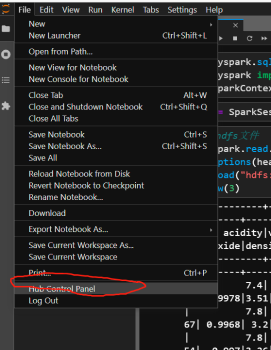
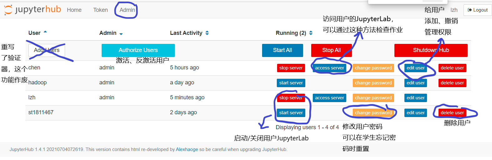
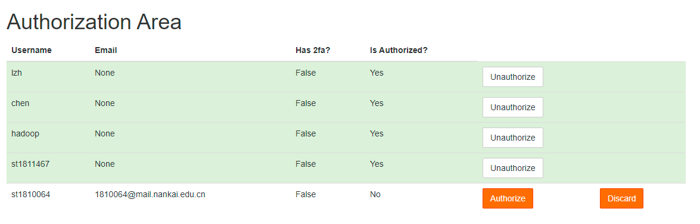

管理JupyterHub
前台管理JupyterHub
从jupyterlab界面的菜单栏点击Hub Control Panel或者10.40.13.225:9500/hub/admin访问管理面版

管理界面如下(右键可以在新的页面打开图片，查看大图)

- Authorize Users：激活、反激活用户。新注册用户需要管理员授权激活，反激活后用户无法登陆，但数据仍然保留。
- Start/Stop Server： 启动关闭用户的JupyterHub
- Access Server：访问用户的JupyterHub，可以通过这种方式协助学生调试
- change password：修改用户密码，这在学生忘记密码需要重置时非常有用（也可直接访问10.40.13.225:9500/hub/change-password/用户名）
- edit user： 修改用户名，添加管理权限
- delete user：删除用户，连带会删除系统用户和该用户所有数据（可能hdfs数据还会保留）
- Add Users：因为jupyterhub的登陆验证器重新开发，这个添加用户功能目前基本上不起作用，不应该使用，新增用户应由用户自行注册后管理员审核通过产生。
授权激活/反激活用户
管理界面点击"Authorize Users"或访问http://10.40.13.225/hub/authorize可以激活新注册用户，或者反激活一个用户使其无法登陆，界面中的discard等价于删除用户，连带会删除系统用户和该用户所有数据（可能hdfs数据还会保留）

JupyterHub的后台配置
jupyterhub需要以root身份启动，原始命令如下
conda activate jupyterhub
jupyterhub -f /etc/jupyterhub/jupyterhub_config.py
-f后面的是配置文件路径，对默认配置做了一些修改，可以在服务器上查看并参考https://jupyterhub.readthedocs.io/en/stable/reference/config-reference.html。
另外运行时的数据保存还需要
- 一个数据库，存储在/var/jupyterhub/jupyterhub.sqlite
- 一个保存用户登陆状态的cookie，存储在/var/jupyterhub/jupyterhub_cookie_secret
- 一个记录jupyterhub进程号的pid文件，存储在/var/jupyterhub/jupyterhub_proxy.pid
这些在配置文件/etc/jupyterhub/jupyterhub_config.py中都有体现。
JupyterHub配置为自启动service
但实际上目前不是这样启动的，我们将jupyterhub注册为一个系统的服务（service），并由systemctl自动启动 注册服务的配置文件存储在/etc/systemd/system/jupyterhub.service
[Unit]
Description=分布式存储与计算课程JupyterHub
Documentation=https://jupyterhub.readthedocs.io/en/stable/index.html
After=syslog.target network.target
[Service]
User=root
Environment="PATH=/bin:/usr/local/sbin:/usr/local/bin:/usr/sbin:/usr/local/anaconda3/envs/jupyter/bin"
ExecStart=/usr/local/anaconda3/envs/jupyter/bin/jupyterhub -f /home/hadoop/jupyterhub_config.py
Restart=on-failure
[Install]
WantedBy=multi-user.target
管理命令为使用sudo或root身份的systemctl命令
systemctl start/stop jupyterhub # 启动、停止
systemctl status jupyterhub # 查看状态及最近的日志
systemctl restart jupyterhub # 重启
systemctl enable/disable jupyterhub # 开机启动/不启动jupyterhub
使用native authenticator并自定义修改
对于JupyterHub的用户验证，我们使用NativeAuthenticator，而且为了绑定系统用户的注册和删除，做了一些修改，重写了这个扩展，源代码在github。
因此安装这个自定义的用户认证模块时，不能直接使用pip从pypi上下载，而应该先从github的代码仓库克隆，然后使用代码中的setup.py，即setuptools本地安装
git clone https://github.com/Alexhaoge/nativeauthenticator.git
cd nativeauthenticator
conda activate jupyterhub
python setup.py install
目前仓库已经下载到/home/hadoop/nativeauthenticator，更新的话git pull即可
添加管理员
由于JupyterHub自动创建的新用户用户名是st开头的，家目录在/data/home/stxxxxx下，管理员用户需要命令行手动创建 1. 创建Linux系统用户
useradd -m -s /bin/bash new_user
- 修改JupyterHub配置文件
/etc/jupyterhub/jupyterhub_config.py，可以通过vim打开vim /etc/jupyterhub/jupyterhub_config.py；找到c.Authenticator.admin_users，添加新建的用户名；
c.Authenticator.admin_users = {'chen', 'alice', 'bob', 'new_user'}
这个配置文件很长，如果找不到选项可以使用vim搜索功能，先按Esc进入vim命令模式再输入/admin_users回车即可找到，之后按i进入编辑模式，完成编辑后Esc进入命令模式，输入:wq保存退出。
3. 重启JupyterHub
4. 在JupyterHub前台见面完成注册流程，用户名密码与刚创建的linux用户一致
5. 使用新创建的管理员账户登陆